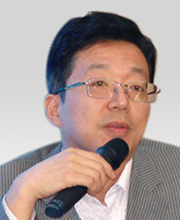
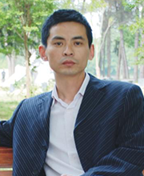
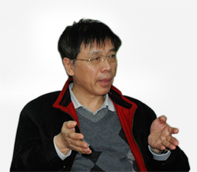

导师们

黄勇，在工控自动化领域具有技术专长，熟悉先进的工控产品技术并将之运用到实践中。具有优秀的管理才能，领导百名工将企业不断发展壮大，现已新建了自己的生产基地。公司已申请两项技术专利，拥有6项软件著作权，500T起重打桩船的变频改造及安全性评估成果获北京质量监督局科技成果三等奖，获北京高新技术企业证书

李谨，物业管理、家政服务专家。北京创业导师，北京巧手物业集团有限公司董事长、总经理。北京家庭服务业协会副会长、朝阳区政协常委。

顾文扬，西安交通大学电机工程系电工绝缘技术本科毕业，法国Paul Sabatier 大学博士。曾任深圳三宝电子有限公司总工程师，深圳市开拓国际市场服务中心副总经理，深圳原野实业股份公司发展部经理，上海远东产业发展投资有公司副总经理，深圳金圣实业有限公司投资部经理，北京创业板投资顾问有限公司董事和深圳金石资产管理公司副总经理等职
黄勇，在工控自动化领域具有技术专长，熟悉先进的工控产品技术并将之运用到实践中。具有优秀的管理才能，领导百名工将企业不断发展壮大，现已新建了自己的生产基地。公司已申请两项技术专利，拥有6项软件著作权，500T起重打桩船的变频改造及安全性评估成果获北京质量监督局科技成果三等奖，获北京高新技术企业证书
李谨，物业管理、家政服务专家。北京创业导师，北京巧手物业集团有限公司董事长、总经理。北京家庭服务业协会副会长、朝阳区政协常委。
顾文扬，西安交通大学电机工程系电工绝缘技术本科毕业，法国Paul Sabatier 大学博士。曾任深圳三宝电子有限公司总工程师，深圳市开拓国际市场服务中心副总经理，深圳原野实业股份公司发展部经理，上海远东产业发展投资有公司副总经理，深圳金圣实业有限公司投资部经理，北京创业板投资顾问有限公司董事和深圳金石资产管理公司副总经理等职